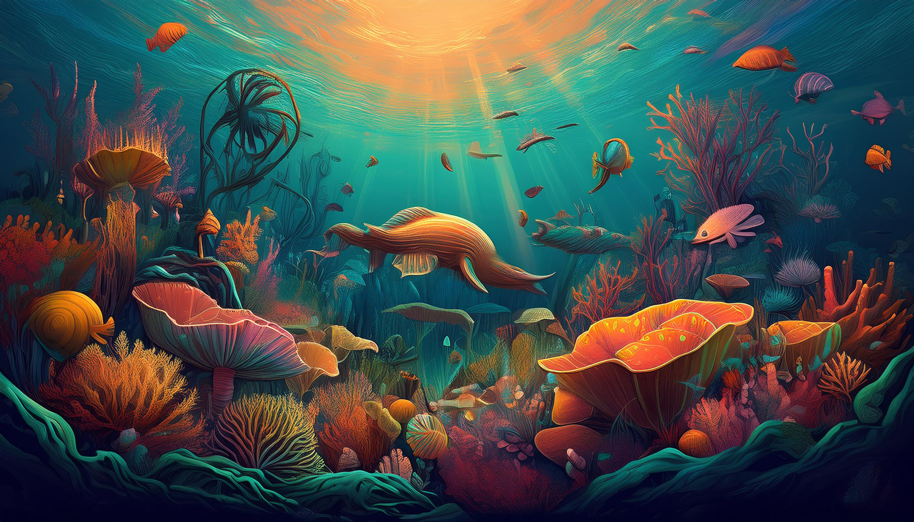

Introduction
Aquatic environments exhibit their own challenges, which require specialized adaptations for survival.
Water bodies vary from freshwater lakes and rivers to vast oceans. They impose specific demands such as
buoyancy, oxygen availability, salinity, and temperature fluctuations. In accordance with these
variations in conditions, aquatic organisms acquire different adaptations that aid them in locomotion,
respiration, feeding, and reproduction. Broadly, these adaptations can be described as physical,
behavioral, and physiological changes that allow organisms to maintain homeostasis and utilize their
environment efficiently. The present essay explores these different forms of aquatic adaptations and
stresses their importance in the survival and multiplication of aquatic life.
Physical Adaptations
Physical adaptations are the structural changes in an organism's body that afford it greater chances of
survival in an aquatic environment. The adaptations are important for aquatic animals to manipulate
buoyancy, streamline, and propel the organism for quick swimming.
Specialized appendages are important for movement, and most aquatic animals have fins, flippers, or
webbed feet to help them swim and move about. For instance, fish have many different fins-dorsal,
caudal, pectoral, pelvic, and anal-that serve different functions, including for rapid swimming and
stabilization. Marine mammals like seals and sea lions have flippers that help them move as well as
forage effectively.
One of the great physical adaptations found among aquatic animals is body shape. Many aquatic organisms
are streamlined or fusiform in body shape, which is favorable for reducing drag and movement through
water. Fish, dolphins, and sharks show this adaptation with a torpedo-shaped body that helps them swim
easily.
The presence of gills is another important physical adaptation in fish and some amphibians that allow
them to extract oxygen from water. Unlike terrestrial animals that breathe through lungs, fish have
gills that have a large surface area suited for efficient gas exchange. In contrast, marine mammals such
as whales and dolphins have evolved to breathe using lungs but have adaptations in the form of blowholes
that enable them to use the water surface for breathing.
Other physical adaptations include camouflage and body coverings. Many aquatic creatures have
countershading, a phenomenon wherein their dorsal (upper) areas are darker in color and their ventral
(lower) areas are lighter in color, merging them with the surrounding water so as to escape detection by
their would-be predators. On the downside, such body coverings may also have protective functions, for
instance, scales, shells, and thick skin. Turtles have hard shells to protect them from predators, while
sharks have dermal denticles that reduce friction and offer protection from parasites.
Behavioral Adaptations
Behaviorial adaptations refer to changes in the activity or habit of an organism as a means of improving
opportunities for survival within ecosystems such as that of freshwater habitat. Such behaviors may
include: movement, feeding, reproduction, and predator avoidance.
Typical forms of behavioral adaptation include migration. All of them followed long migratory routes
splash some distance away from the above-mentioned. Salmon enter rivers in fresh waters in order to
spawn, while whales migrate from feeding grounds situated in polar waters to breeding hotspots in
tropical regions. Such migratory movements are beneficial for the survival of organisms because they
enable them to benefit from the best environmental conditions at a particular time.
Feeding strategies are yet another aspect of successful behavioral adaptation. To this end, aquatic
animals currently exhibit hydraulic features of feeding behavior since their environment allows for the
absorption of plankton and nutrient provisions from the passing water. This is best demonstrated by
baleen whales, oysters, and sponges, as they are filter feeders, drawing their food from the water using
some specialized structures. Predatory fish such as sharks exhibit ambush or pursuit hunting techniques
depending on speed and agility. Commensal categories such as rays and catfishes are scavenging organisms
that have adapted by sifting sediments in search for food.
Another behavioral adaptation is social behavior and communication. Most marine species such as
dolphins, orcas, and certain fishes are social organisms, moving in groups or schools to increase their
safety from predators. Schooling fishes tend to move in a certain synchronized way to confuse predators
and thus lower each individual's risk of being caught. Also, marine mammals can communicate with each
other as well as navigate their surroundings using vocalizations, echolocation, and body language.
Dolphins rely on clicking sounds and whistles at high frequencies as a means to locate prey and engage
with members of their group.
They also provide such forms of reproduction that fish have wherein behaviors would adapt according to
the habitat. Some of the species practice external fertilization, wherein the gametes are released into
the water, while others are through internal fertilization. Parental care is highly variable among
species, with some like cichlids that are mouth-brooding parents incubating their eggs and offspring,
while others such as sea turtles lay their eggs on beaches and then depart, leaving the eggs to develop
independently.

Physiological Adaptations
Physiological adaptations are the internal biological mechanisms helping aquatic organisms in maintaining
homeostasis and dealing with environmental stressors like salinity, oxygen levels, and temperature
variations.
Osmoregulation is one of the principal physiological adaptations. It is the mechanism aiding organisms
in maintaining a balance of salts and water in their bodies. The freshwater fish are in constant inflow
of water because of osmosis and thus keep excreting very dilute urine to avoid flooding the body with
undue water. On the other hand, the marine fish tend to lose water to the seawater with high salinity
and thus drink seawater to compensate for this loss while excreting the excess salts via specialized
cells in their gills.
Thermoregulation is another significant physiological adaptation. Most fish are ectothermic, having
their body temperature fluctuate with the surrounding water; however, some species like tuna and some
sharks exhibit regional endothermy. These fish maintain their internal body temperature at a level
significantly above that of the surrounding water through a specialized network of blood vessels known
as the rete mirabile; thus conserving heat to enhance muscular efficiency.
Also, adaptations for breathing are crucial for survival in aquatic environments. Fish use gills to
extract oxygen from the water, and some species such as lungfish, have lungs for survival in low-oxygen
environments. Furthermore, marine mammals such as seals and whales have developed adaptations that allow
them to remain submerged for long periods, by storing large amounts of oxygen in their muscles and
blood, lowering heart rate to conserve energy, and utilizing myoglobin-rich tissues to facilitate oxygen
storage.
Bioluminescence is yet another example of an interesting type of physiological adaptation seen in
deep-sea organisms. Many deep-sea fishes, jellyfishes, and squids produce light by chemical
transformation in specialized groups of cells called photophores. The advantage of this adaptation is in
attracting prey or repelling harmful ones or in intra-species signaling in the abyssal darkness.
The production of toxins by aquatic organisms serves as a further biological adaptation against
predators. Some organisms such as pufferfish and certain jellyfishes can produce very powerful toxins
that deter their predators. Such toxins may either be stored in the tissues or excreted as venom in
defense against threats.

Conclusion
Aquatic adaptations are important for survival and success of organisms, which undergo diverse
environments in water. Physical adaptations, such as a streamlined body, gills, and camouflage, aid in
movement, breathing, and protection. Behavioral adaptations, such as migration, feeding, and social
behaviors, enable aquatic species to maximize resources and minimize risks. Physiological adaptations
include osmoregulation, thermoregulation, and bioluminescence in maintaining homeostasis and flourishing
in adverse conditions.
Such adaptations indicate the outstanding diversity and complexity of life in aquatic ecosystems.
Studying such evolutionary characteristics broadens our knowledge of marine biology and ecology while
also imparting a pressing need to conserve aquatic habitats. Anthropogenic activities are ever more
invading and destroying the aquatic life and ecosystems that do exist. As awareness grows, we should
responsibly carry on with the protection and conservation of aquatic life and the seas that they
inhabit. With the knowledge gained from studying aquatic adaptations, we can make valid contributions
toward the sustainable management of our forest resources.